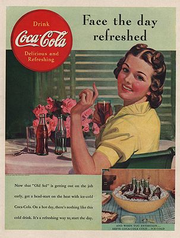

During the 1980s, most U.S. Coca-Cola bottlers switched their primary sweetening ingredient from cane sugar (sucrose) to the cheaper high-fructose corn syrup. As of 2009, the only U.S. bottler still using sucrose year-round is the Coca-Cola Bottling Company of Cleveland, which serves northern Ohio and a portion of Pennsylvania. Many bottlers outside the U.S. also continue to use sucrose as the primary sweetener. Twelve-ounce glass bottles of sucrose-sweetened Coca-Cola imported from Mexico are available in many U.S. markets for those consumers who prefer the sucrose version (see “Mexican Coke”, below).
Passover: Coca-Cola was certified kosher in 1935 by Rabbi Tobias Geffen after beef tallow-derived glycerin was replaced with vegetable glycerin. However, the high-fructose corn syrup used by most U.S. bottlers since the 1980s renders it kitniyot by the definitions of Jewish kosher law, and therefore forbidden during Passover according to certain traditions. Each year, in the weeks leading up to Passover, bottlers in markets with substantial Jewish populations switch to sucrose sweetener in order to obtain Kosher for Passover certification.
"New Coke": In April 1985, in response to marketing research suggesting that a majority of North American consumers preferred the taste of rival Pepsi to Coca-Cola, the company introduced a sweeter, less effervescent version of Coca-Cola in the U.S. and Canada. Although the new formulation had beaten both Pepsi-Cola and the old Coke formula in multiple blind taste tests, consumer response was overwhelmingly negative. The company quickly reintroduced the original beverage, rebranded as “Coca-Cola Classic”, while continuing to market the new version as “Coke”. New Coke remained on the market, in North America only, for 17 years—the last 10 as “Coke II”—until it was quietly discontinued in 2002. The “Classic” designation remained on the original product’s label, its prominence gradually decreasing over the years, until it was removed entirely in 2009.
Mexican Coke: In the early 2000s, cane-sugar-sweetened Coca-Cola produced in Mexico began to appear in bodegas and Hispanic supermarkets in the Southwestern United States; in 2005, Costco began offering it. All were obtaining the Mexican product—which was not labeled in accordance with U.S. food labeling laws—outside the official Coca-Cola distribution network. In 2009, the Coca-Cola Company began officially importing Coca-Cola produced in Mexico, with proper labeling, for distribution through official channels.